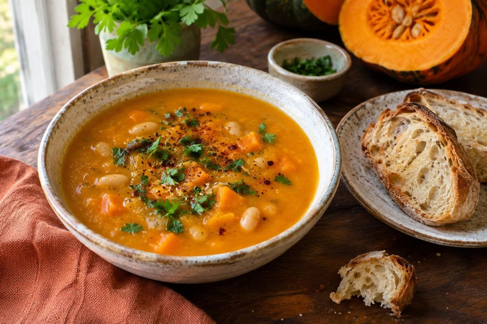

American · Dinner · Serves 12 · 150 min total
Smoky Seminole Pumpkin–White Bean Soup with Seared Chicken

Ingredient amounts are estimates when scaled. Original recipe and AnyList import remain unchanged.
Ingredients
- 6 cups cooked Seminole pumpkin flesh (roast enough whole pumpkins to yield this amount; size and yield vary)
- 2 cans (15 oz each) white beans, drained and rinsed
- 4 cups chicken broth, plus up to 2 cups more as needed
- 1 large onion, diced
- 4 garlic cloves, chopped
- 2 Tbsp olive oil
- 2 tsp smoked paprika
- 1 tsp ground cumin
- 1 tsp dried thyme
- ½ tsp black pepper
- 1–2 Tbsp lemon juice, to taste
- Salt, to taste
- 2½ lb boneless skinless chicken thighs
- 1½ Tbsp olive oil, for chicken
- 2 tsp smoked paprika, for chicken
- 1 tsp ground cumin, for chicken
- 1 tsp garlic powder, for chicken
- 1 tsp kosher salt, for chicken
- ½ tsp black pepper, for chicken
- 1 Tbsp lemon juice, for chicken
- Prepared Cherry Bomb hot sauce, optional for serving
Instructions
- Roast the pumpkins: wash and dry, pierce the rind in several places and place whole on a lined rimmed baking sheet. Bake at 350°F, starting to check at 60 minutes; larger pumpkins may take 90 minutes or longer. Continue until a knife slides easily into the flesh. Alternatively, halve raw pumpkins if easy to cut, leave seeds inside and roast cut-side down until tender.
- Cool just enough to handle. Halve whole-roasted pumpkins, scoop out seeds and stringy centers, then scoop flesh from the rind. Measure 6 cups for the soup. Refrigerate any flesh prepared ahead promptly in shallow containers; roast Wednesday for Thursday.
- In a large soup pot, soften onion in olive oil over medium heat for 8–10 minutes. Add garlic, smoked paprika, cumin and thyme; stir 30 seconds.
- Add pumpkin, all the drained white beans, black pepper and 4 cups broth. Bring to a gentle simmer and cook 10–15 minutes, stirring to prevent sticking.
- Blend all the beans and pumpkin thoroughly with an immersion blender until the entire soup base is smooth and creamy; do not reserve whole beans. For an even smoother base, use a countertop blender in small batches, following its hot-liquid instructions and venting the lid. Thin with extra broth as needed, leaving space in the crockpot for chicken. No cream, milk or coconut milk is needed.
- While the soup simmers, coat chicken thighs with the chicken's olive oil, smoked paprika, cumin, garlic powder, kosher salt, black pepper and lemon juice. Grill over medium-high heat or sear in a large skillet over medium-high heat, in batches if needed, about 5–7 minutes per side depending on thickness, until browned and at least 165°F in the thickest part. Rest 5 minutes, then chop into small bite-size pieces.
- After blending, stir the chopped cooked chicken into the soup near the end and heat through. Add the soup's lemon juice and salt to taste. If using previously cooked chilled chicken, heat the combined soup to 165°F throughout. Transfer hot to a preheated 6-quart slow cooker, following its fill limits and instructions; hold any excess separately. Use the cooker to hold finished soup hot rather than reheating cold soup.
- For soccer practice, secure the cooker upright during transport, plug in on arrival and keep soup at 140°F or above, checking with a thermometer. If the soup was chilled, first reheat on the stove to 165°F throughout, bringing it to a boil while stirring, then transfer to the preheated cooker. Without hot holding, serve within 2 hours of removing from heat (1 hour above 90°F outdoors).
- Serve with cranberry–goat cheese–rosemary focaccia and your prepared Cherry Bomb hot sauce on the side. Start with ½ tsp sauce per bowl and add to taste. Refrigerate leftovers promptly in shallow containers; do not cool a full crock of soup on the counter.
Suggested bread
Cranberry, Goat Cheese and Rosemary Sourdough Focaccia — one pan makes 12 squares. The bread contains dairy; the soup itself does not.